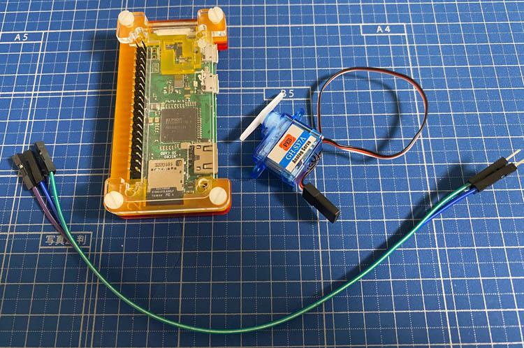
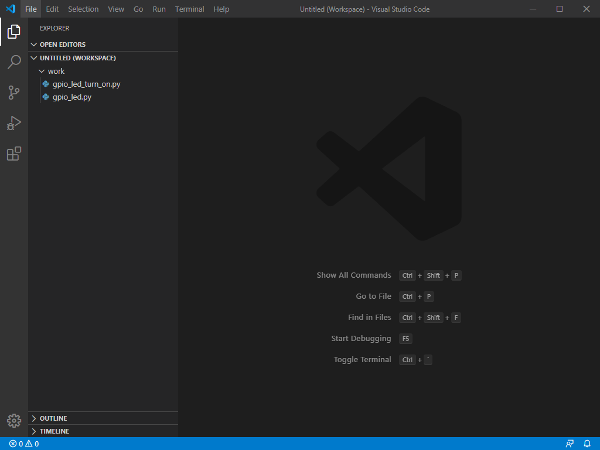
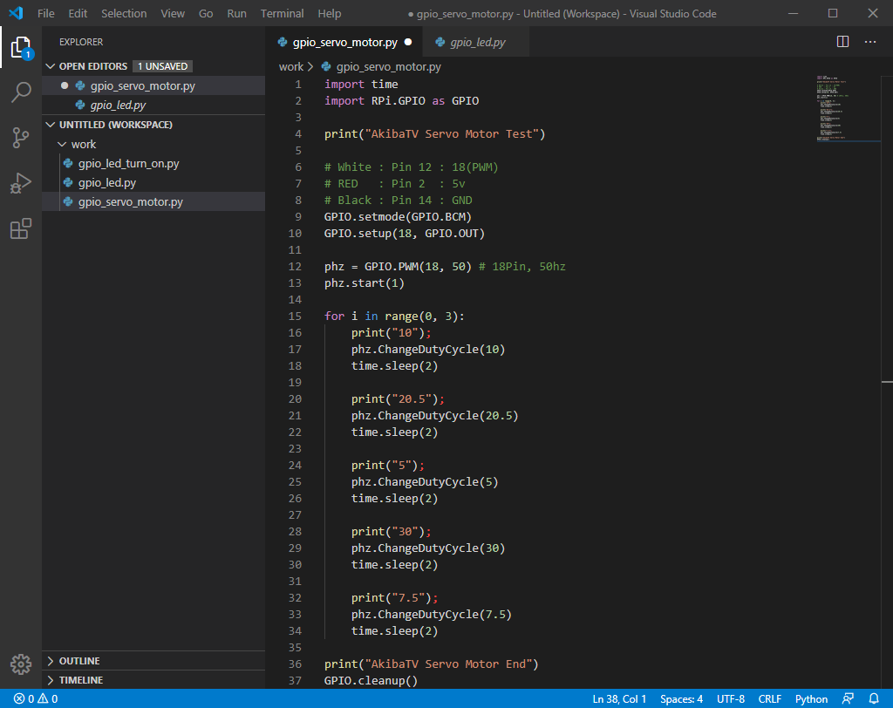
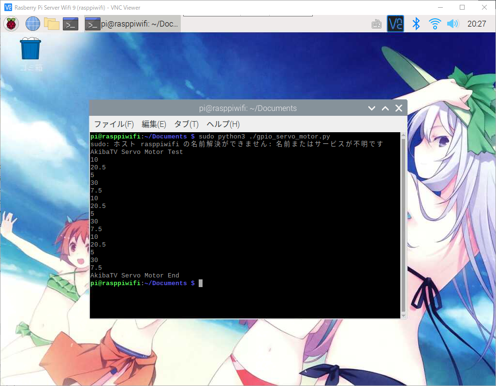
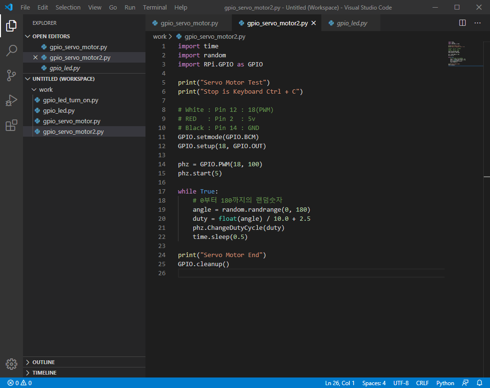
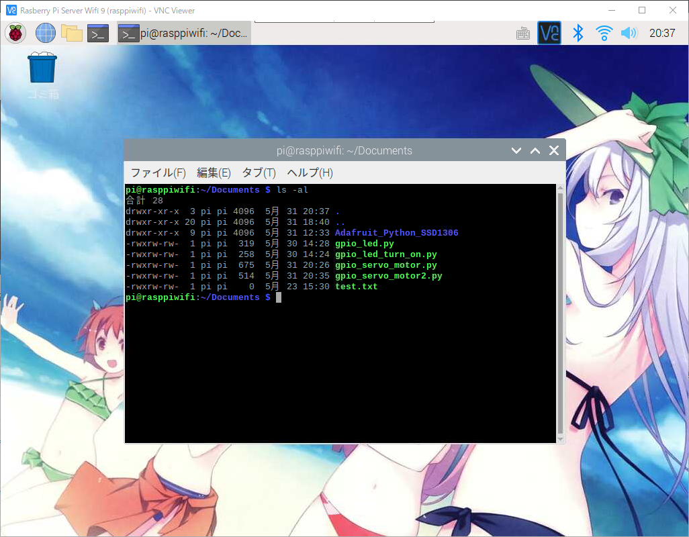
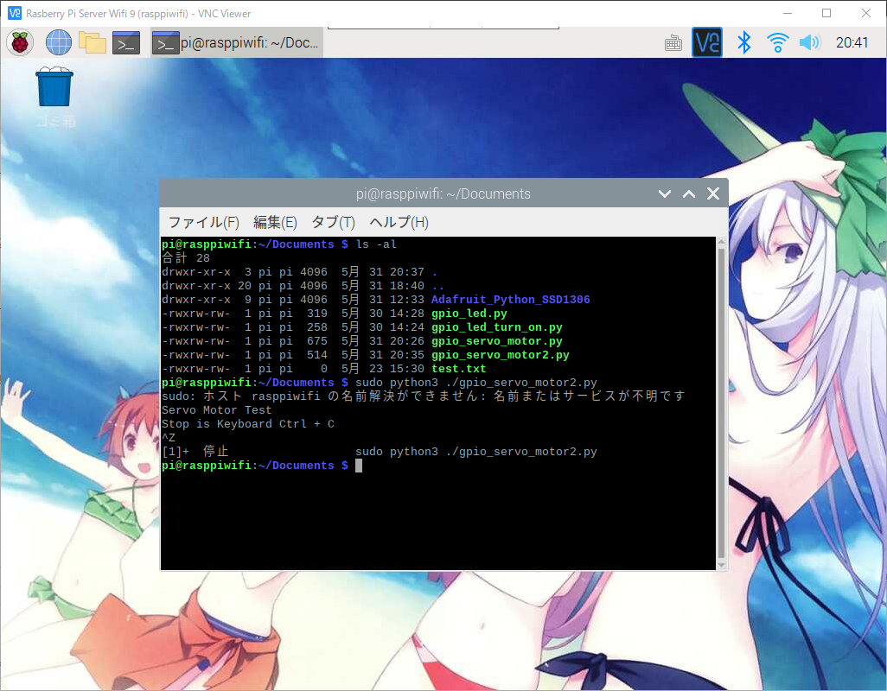

라즈베리파이와 Python으로 Servo Motor 제어하기
라즈베리파이에 GPIO와 Python으로 Servo Motor 제어하기
안녕하세요.
이번에 소개할 내용은 라즈베리파이에 GPIO를 파이선을 이용해서 Servo Motor(서보모터) 제어하기 입니다.
우선 준비물이 필요 합니다.
라즈베리파이 본체 OS설치와 Python설치가 끝난 상태
저의 경우는 라즈베리파이 제로를 이용해서 테스트를 했습니다.
- Servo Motor(서보모터)
- 점퍼와이어 암,수가 있는걸로 합니다. (3줄필요)
이렇게 준비물이 갖춰져 있는지 확인 하시고 본격적으로 Servo Motor(서보모터) 제어하기를 하겠습니다.

서보모터를 구매하시면 어떤게 시그널이고 어떤게 전압이고 어떤게 GND인지 구분을하기 어렵습니다.
가장 알기 쉬운것은 무조건 빨간색 또는 가운데선이 전압을 넣어주는 선 입니다.
제가 사용하는 서보모터의 색깔별 구성은 아래의 표를 참고해 주세요.
| Color | Pi GPIO Pin | Notes |
|---|---|---|
| White | 12 | 18(PWM) |
| RED | 2 | 5V |
| Black | 14 | GND |
서보모터를 사용하실때는 전압이 5V에 점퍼를 연결하는걸 추천드립니다.
3.3V로도 가능은 하지만 회전력과 파워가 한참 떨어집니다.
GPIO핀에 대한 자세한 내용을 원하시는 분은 아래의 링크를 들어가셔서 참고해 주세요.
라즈베리파이에서 GPIO를 사용하기전 알아두어야 할 사항
서보모터를 구동하기 위해선 우선 코딩을 하셔야만 합니다.
이번부터는 메모장으로 코딩을 하지않고 Visual Studio Code(비주얼 스튜디오 코드)를 이용해서 하겠습니다.
설치가 안되어 있으신 분들은 미리 설치를 해주시기 바랍니다.

실행하시고 기존에 사용했던 작업폴더를 추가해 주시기 바랍니다.
그리고 서보모터 관련해서 파일명을 gpio_servo_motor.py로 파일을 하나 추가해 주시기 바랍니다.
간단한 예제로 서보모터가 잘 돌아가는지 확인하는 코드를 작성해 보도록 하겠습니다.
1 | import time |

3번의 루프가 돌아가면서 2초마다 5번의 지정된 수치만큼 회전을 하게되는 코딩을 해보았습니다.
실제로 동작을 확인하기 위해서 라즈베리파이에 삼바를 통해 적당한 위치에 소스파일을 넣어주시기 바랍니다.
라즈베리파이를 VNC로 접속후 소스파일을 넣어주신 경로까지 이동해 주시기 바랍니다.
위와같이 작성한 서보모터 파이선 소스파일이 있는것을 확인하실수 있습니다.
이제 이것을 실행을 해보도록 하겠습니다.
파이선을 2.x버전대를 사용하시는 분들은 아래의 명령어를 입력해 주시기 바랍니다.
1 | $ sudo python ./gpio_servo_motor.py |
파이선을 3.x버전대를 사용하시는 분들은 아래의 명령어를 입력해 주시기 바랍니다.
1 | $ sudo python3 ./gpio_servo_motor.py |
저의경우는 파이선 3.x버전대를 사용하기때문에 3버전대 명령어로 진행 하겠습니다.


실행을 하게되면 3번의 루프가 돌면서 서보모터가 회전된것을 보시게 되셨을겁니다.
이번에는 랜덤으로 무한루프를 돌려서 서보모터를 회전시키는 예제를 해보도록 하겠습니다.
Visual Studio Code(비주얼 스튜디오 코드)에서 파일명을 gpio_servo_motor2.py로 해서 추가를 해주시기 바랍니다.
추가를 하셨으면 아래와 같이 소스코드를 작성해 주시기 바랍니다.
1 | import time |

작성이 되셨으면 소스파일을 라즈베리파이에 배치를 해주시기 바랍니다.

파이선을 2.x버전대를 사용하시는 분들은 아래의 명령어를 입력해 주시기 바랍니다.
1 | $ sudo python ./gpio_servo_motor2.py |
파이선을 3.x버전대를 사용하시는 분들은 아래의 명령어를 입력해 주시기 바랍니다.
1 | $ sudo python3 ./gpio_servo_motor2.py |
명령어를 치시고 실행을 하시게 되면 무한반복으로 서보모터가 돌아가는것을 확인 하실수 있습니다.
프로그램을 도중에 멈추시기 위해선 Ctrl + C키를 눌러주시면 프로그램이 강제 종료가 됩니다.


이렇게해서 라즈베리파이에서 서보모터 제어하기를 해보았습니다.
서보모터를 좀더 응용을 하시게 되면 여러가지 제어하는 기술을 만드실수 있게 되겠습니다.